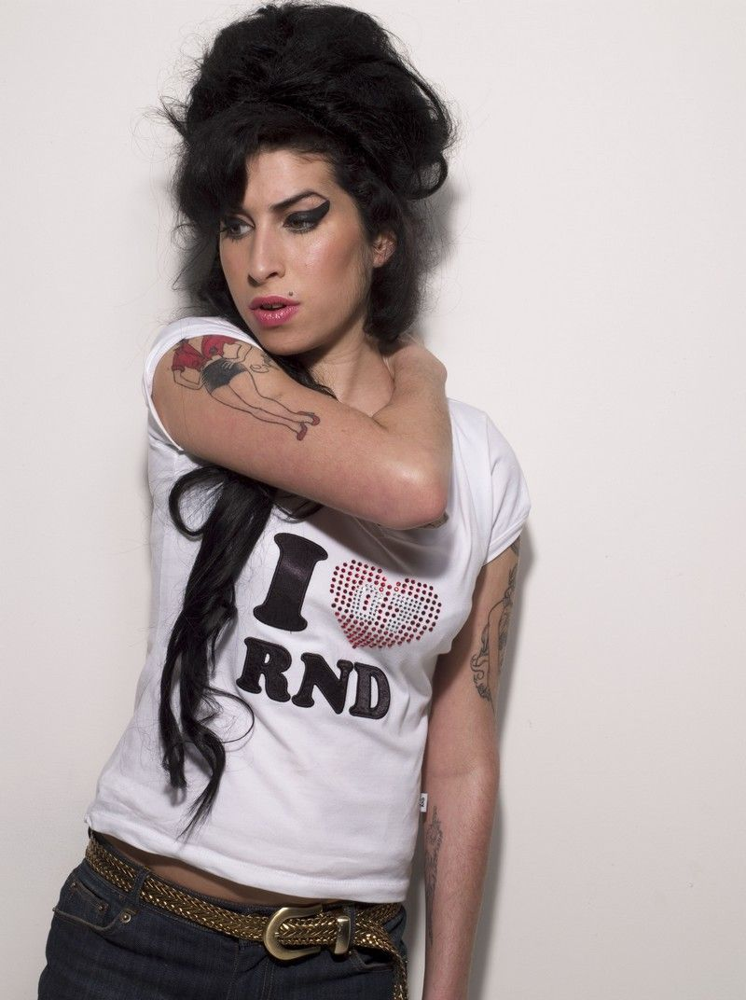
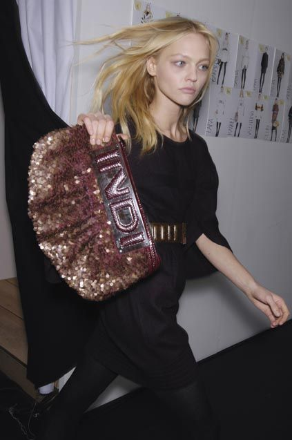

im gia, an audiovisual, graphic designer and illustrator based in florida. im passionate about telling meaningful stories, drawing inspiration from films, music and fashion archives. im continually driven to grow as a creative and to refine my craft within the art and design world. my goal is to become a creative director, leading bold, meaningful visual narratives that connect brands with their audiences.

i stay closely attuned to emerging trends and the pulse of pop culture, using that awareness to inform work that feels current, relevant and resonant. one of my core strengths lies in developing original creative concepts and translating ideas into compelling visual proposals. looking ahead, i am especially drawn to the marketing and advertising space, where i hope to grow into a creative director role that allows me to shape brand identities and campaigns with both vision and purpose.
